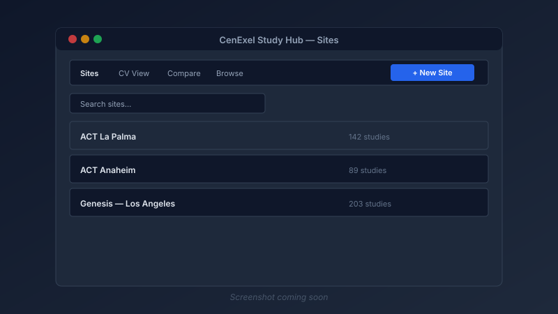

ClinSpark Ticketing System
A no-code/low-code ticketing workflow built in Microsoft Power Automate. It turns Microsoft Forms submissions into tracked Planner tasks, sends email notifications to stakeholders, and logs every request in Excel so the clinical operations team has a single source of truth for inbound requests. The system was approved and adopted company-wide.
The Problem
Internal requests for the ClinSpark platform were arriving through scattered channels — email, chat messages, and direct conversations — making it hard to track who asked for what, when, and whether anything had been done:
- No centralized intake form; request details were often incomplete.
- Requests could be forgotten or buried in inboxes.
- There was no shared view of open, in-progress, or completed work.
- Stakeholders had no visibility into status without sending follow-up messages.
- Reporting on workload or turnaround time required manual aggregation.
Solution Overview
Request Intake (Microsoft Forms)
- Standardized form captures request type, priority, description, requester, and CRC/builder contacts
- Required fields prevent incomplete submissions
- Form responses feed directly into Power Automate for real-time processing
Task Routing (Microsoft Planner)
- Each approved submission creates a Planner task with title, description, and priority
- Tasks are assigned to the appropriate builder or CRC based on form input
- Planner buckets reflect request status (New, In Progress, Completed)
Email Notifications (Office 365 Outlook)
- Submission confirmation sent to the requester with the generated ticket ID
- Builder/CRC notification includes direct links to the task and request details
- Completion notification automatically sent when a Planner task is marked done
Excel Log & Reporting
- Every form response is appended to an Excel Online workbook for historical tracking
- Refresh flow keeps summary tables and pivot-friendly data current
- Status and completion dates are synced back from Planner
Data Normalization
- Semicolon-separated contact lists are trimmed, lower-cased, and de-duplicated
- Blank entries are filtered out before sending notifications
- Priority strings are normalized so Planner labels are consistent
Loop & Sync Flows
- Scheduled flow iterates through Planner tasks to update the Excel tracker
- Completion flow triggers when a task is finished and notifies the requester
- Flows share connection references and a common naming convention for maintainability
Workflow
- Intake: A user submits the Microsoft Form.
- Validation & parse: Power Automate extracts fields, normalizes contact strings, and assigns a ticket ID.
- Task creation: A Planner task is created with the parsed details and assigned owner.
- Notifications: Confirmation email goes to the requester; task email goes to the assigned builder/CRC.
- Logging: The request is appended to the Excel tracker.
- Completion: When the task is marked complete, a final notification is sent and the Excel log is updated.
Tech Stack
Microsoft Power Automate
Microsoft Forms
Microsoft Planner
Office 365 Outlook
Excel Online
SharePoint Online
Screenshots

Challenges & Solutions
- Inconsistent contact lists: Form submitters entered multiple CRC or builder emails in free text with inconsistent separators. I added a normalization step that lower-cases, trims, splits on semicolons, removes blanks, and rejoins the list before sending.
- Duplicate notifications: Early versions sent emails to every address even when some were blank. A filter array step now removes empty entries before the send action runs.
- Status sync between Planner and Excel: Manual updates in Planner were not reflected in the log. A scheduled sync flow loops through tasks and writes the latest status and completion date back to Excel.
- Maintainability across five flows: Each flow handles a distinct part of the lifecycle. I kept naming consistent, shared connection references where possible, and exported each flow into source control so changes are traceable.
Outcomes & Impact
- Replaced scattered email/chat requests with a single, standardized intake process.
- Every request now has a ticket ID, an assignee, and a visible status in Planner.
- Stakeholders receive automatic confirmation and completion emails without manual follow-up.
- Excel tracker gives supervisors a quick view of volume, priority distribution, and completion trends.
- Approved and adopted company-wide by the clinical operations team.
Lessons Learned
- Even no-code workflows need defensive data cleaning — never trust free-text email fields.
- Users adopt the tool faster when they get immediate confirmation that their request was received.
- Logging every request to Excel from day one makes future reporting and auditing much easier.
- Source-controlling exported Power Automate flows makes it possible to review changes and roll back.
Future Improvements
- Add an approvals step for high-priority or cross-team requests before creating the Planner task.
- Build a Power BI dashboard on top of the Excel tracker for richer analytics.
- Integrate Teams adaptive cards for status updates directly in the operations channel.
- Add SLA tracking with due-date reminders based on request priority.